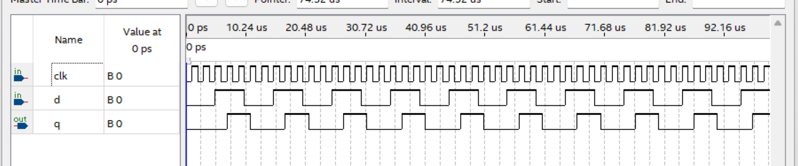
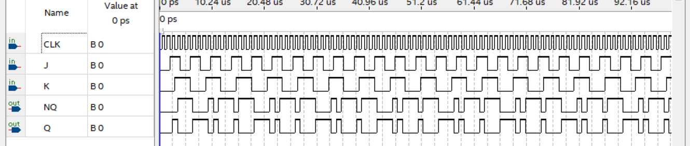
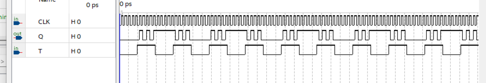
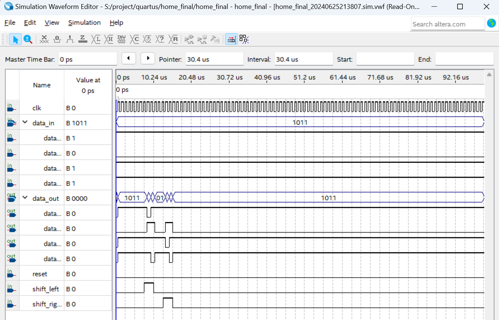

VHDL 数字逻辑设计与仿真
本系列实验使用 VHDL 硬件描述语言实现了数字电路中的基本时序逻辑单元： 五种触发器（D 边沿触发、D 电平触发、JK、SR、T）、四位双向移位寄存器 以及同步可逆计数器（四位二进制与八进制），并在 ModelSim 中完成功能仿真与时序验证。
1 五种触发器的 VHDL 实现
1.1 边沿触发 D 触发器
在时钟上升沿采样输入 D 并锁存至输出 Q。使用 rising_edge(clk)
或 clk'event and clk='1' 检测上升沿。
异步复位端 rst 在低电平时强制 Q = '0'。
1.2 电平触发 D 触发器
当 clk = '1' 时，输出 Q 实时跟随输入 D（透明锁存器）；
当 clk = '0' 时，Q 保持不变。本质为电平敏感的锁存器，
时序分析中需注意竞争冒险。
1.3 JK 触发器
JK 触发器的状态转移：J=K=0 保持，J=1/K=0 置位，J=0/K=1 复位，J=K=1 翻转。
VHDL 中用 CASE 语句在上升沿对 J&K 的组合值分支判断。
1.4 SR 触发器
SR 触发器中 S=R=1 为禁止态（输出不确定）。本实现中将该状态定义为保持上一状态， 避免仿真时产生不确定值。
1.5 T 触发器
T=1 时每个时钟沿翻转一次，T=0 时保持。T 触发器可由 JK 触发器令 J=K=T 得到， 但本实现直接描述翻转逻辑。
2 四位双向移位寄存器
支持左移、右移与并行加载三种模式，由模式选择信号 mode(1:0) 控制：
| mode | 功能 | 操作 |
|---|---|---|
| 00 | 保持 | Q 不变 |
| 01 | 右移 | Q(3)←SI, Q(2)←Q(3), Q(1)←Q(2), Q(0)←Q(1) |
| 10 | 左移 | Q(0)←SI, Q(1)←Q(0), Q(2)←Q(1), Q(3)←Q(2) |
| 11 | 并行加载 | Q←D（4-bit 并入） |
VHDL 中使用 CASE mode IS ... END CASE; 选择操作，
移位通过信号拼接（& 运算符）实现。
3 同步可逆计数器
3.1 四位同步二进制可逆计数器
通过 up_down 信号选择加计数或减计数。内部使用 4-bit
unsigned 信号，在时钟上升沿加 1 或减 1，自然溢出实现循环（0–15）。
设有同步使能端 en 与异步复位端 rst。
3.2 同步八进制可逆计数器
计数范围 0–7（3-bit）。与四位计数器结构类似，但加计数到 7 后归零， 减计数到 0 后跳至 7。仿真波形中可清晰观察到八进制循环特征。
4 ModelSim 仿真验证
所有 VHDL 设计均在 ModelSim 中编写 Testbench 并运行功能仿真。
Testbench 以 process 语句生成时钟与输入激励，
通过 assert 语句自动检查输出是否符合预期。






5 项目成果
- 使用 VHDL 实现五种基本触发器（D 边沿/电平、JK、SR、T），掌握时序逻辑建模方法
- 实现四位双向移位寄存器（左移/右移/并行加载/保持四种模式）
- 实现四位二进制与八进制同步可逆计数器
- 所有设计通过 ModelSim 功能仿真验证，波形与理论状态转移表一致